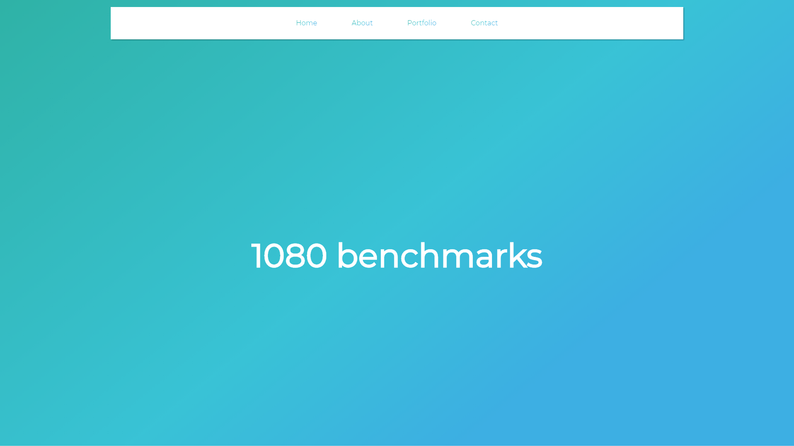

History
Before I created this site I mostly fiddled with HTML and CSS in my spare time. This was the first site I allocated time and effort to create and the first site of mine to be hosted on the web. The idea for this site was to allow people interested in my YouTube channel, GTX 1080 Benchmarks, learn more about me as a person and what I do.
Inspiration
Of course, because this is an early website of mine it has some flaws in its design and functionality. Nevertheless, I still see this site as a functional way of getting the word out about my channel. That's why I still use it as this site's homepage. Because I was in my early stages of web design I wasn't sure how I would style this site. What I did for inspiration (when I'm lacking creativity), which I sometimes still do, is a simple Google search. Something probably along the lines of, "Web Design trends [insert year]" I then went to the top result and picked a trend that appeared appealing.
Design Aspects
Looking back at this site I think of it as a motley of different design elements mashed into one page. Which of course is understandable, as it was one of my first sites. Looking past the mismatch of the page I can begin to see what I had envisioned creating this site. Here is a list of what I attempted and how I fell flat doing so.
-

- Gradients -
This is still a trend in web design which I am fond of but I don't feel I implemented them well. I attempted to carry them throughout the site in small things like the text which has a gradient background. This was not a good idea as background-clip isn't widely compatible. It also becomes hard to read at smaller screen sizes.